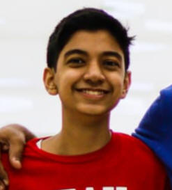
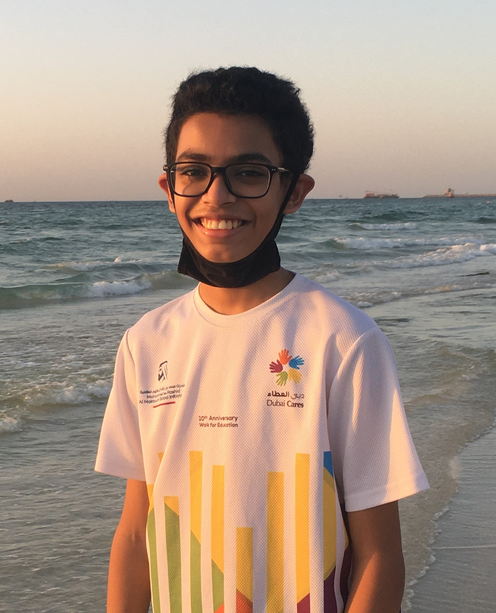

A student of 9-I, Faizaan likes extremrely sophisticated things that make his life harder. With his readiness to take up a challenge at however short a notice, you can't possibly go wrong with him as your teammate. Surprisingly, he hates reading any text longer than 3 sentences and isn't what you'd call athletic. Interested in almost everything new, he is meticulous in his work and gets easily immersed in what he's doing.

Another student of 9-I, Tanmeen Patel has a creative mind that can come up with almost anything. Unlike Faizaan, Tanmeen has a passion for reading. Especially, dark books like murder mysteries. He loves writing speeches and articles. He's another prefectionist and wants everything to be in order. In short, he's the ideal child in the class.
As much as we would love to make an elaborate show of how we've set out to change the world, we can't hide the truth. This is a project for the IT Electives. And if you, a fellow dipsite is reading this, it means that Abstract turned out to be good enough to be on the school webiste. Nice, eh? With more than 720 hours of blood, sweat and tears (a lot of tears), we've finally made something that connects to us deeply.
Contact: Tanmeen Patel: +971 50 695 7640 -
tanmeenpatel@gmail.com
Faizaan Nasir: +971 50 824 5491 -
faizaannasir06@gmail.com